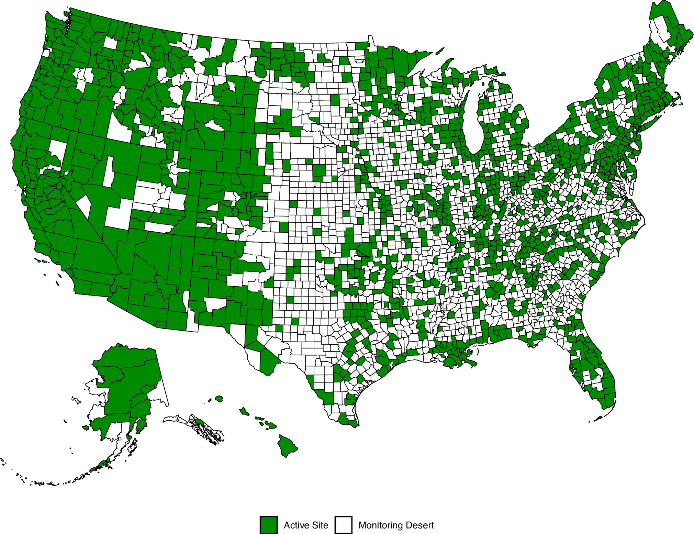

Introduction
In late October of 1948, a thick smog engulfed Donora, Pennsylvania and its neighboring town Webster. Within the span of a few days, 20 people were dead and hundreds more ended up in hospitals, complaining of breathing difficulty (Boissoneault 2018).

The disaster, caused by industrial emissions from U.S. Steel factories, brought national attention to the public health impacts of air pollution and the need for stronger regulation. In 1970, the EPA was formed and Congress passed the Clean Air Act, the primary federal law in the United States that regulates air emissions. It requires the EPA to set National Ambient Air Quality Standards (NAAQS) for six common pollutants, including fine particulate matter (PM2.5), which consists of particles 2.5 micrometers or smaller in diameter (U.S. Environmental Protection Agency, n.d.).
The Clean Air Act provides the foundation for the EPA’s ambient air monitoring network, which uses outdoor monitors to track air quality nationally and enforces the NAAQS.
The Case Study
On paper, the U.S. air quality monitoring network is an adequate system built to protect public health. In practice, though, it only captures part of the picture. Of the approximately 3,100 counties in the United States, 1,848 lack an air quality monitor, leaving about 40% of the country unmonitored. An estimated 50 million Americans (15.3% of the population) live in these “air quality monitoring deserts”, shown in white in the map below, which are more common in rural and predominantly minority communities (Roque et al. 2025).

Low-cost sensor networks, like PurpleAir, have helped supplement the spatial gaps in the EPA’s regulatory monitoring network. However, it’s important to note that these improvements benefit certain demographic and socioeconomic groups of people.
Networks such as PurpleAir were found to be concentrated in whiter, wealthier, and more educated neighborhoods (deSouza and Kinney 2021). This is particularly concerning considering that predominantly Black, Asian, and Hispanic/Latino communities experienced higher average PM2.5 concentrations than predominantly White and Native American communities between 2004 and 2016. Lower-income communities also experienced higher average PM2.5 levels compared to higher-income communities (Jbaily et al. 2022).
Monitor placement may also contribute to these disparities. deSouza and Kinney (2021) found that socioeconomic and demographic factors influence the placement of these air quality monitors. Regulators tended to avoid placing monitors in pollution hotposts, unless the area was within a higher-income and predominantly White community. This could mean that pollution in marginalized communities is less likely to be directly measured and documented.
This creates a gap between where pollution is worst and where it’s measured – the communities suffering from the dirtiest air are typically the ones with the least data to prove it, and the lack of data makes it difficult to enforce health standards and push for regulation changes. The aforementioned gaps in coverage can widen these inequalities by limiting certain communities’ ability to respond to the air pollution they face.
Application of Class Material
This case demonstrates several types of biases we studied in class:
Sampling bias – unequal representation in spatial coverage (Konno et al. 2024)
The overarching bias of this case study is sampling bias, specifically spatial coverage bias. EPA regulatory monitors and PurpleAir sensors are unevenly distributed across geographic areas and demographic groups. As a result, communities without nearby monitors are less directly represented in air quality data. Fewer monitors don’t necessarily mean lower estimated pollution, but rather less observational evidence and potentially greater uncertainty of local air quality.Selection bias – deciding where monitors are placed (Konno et al. 2024)
Monitor locations are not randomly selected but are influenced by regulatory requirements and local decisions. Grainger and Schreiber (2019) found evidence that local regulators may avoid placing monitors in pollution hotspots, favoring cleaner parts of counties instead. Similarly, deSouza and Kinney (2021) found that monitors were more likely to be placed in high-pollution areas of wealthier or whiter communities. These patterns can make pollution in some communities more visible to regulators, leaving others underrepresented.Measurement bias – in low-cost sensors (Konno et al. 2024)
PurpleAir sensors were found to overestimate PM2.5 concentrations in humid and smoky conditions unless corrected (Barkjohn et al. 2021). Thus, even when monitoring stations are present, their measurements may not accurately reflect actual pollution levels. These measurement errors can introduce uncertainties into pollution estimates. When combining different monitoring technologies, researchers need to account for differences in accuracy and reliability.
All three biases affect the earliest stage of the air quality monitoring process: data collection.
In “Why Data Is Never Raw”, Barrowman (2018) emphasizes that how data are collected limits the conclusions researchers can draw. The unequal distribution of air quality monitors across the U.S. directly relates to this concept: where are these monitors placed, and why? The decisions about where monitors are placed determine which communities are represented in environmental datasets and whose pollution exposure is underobserved.
For example, if a rural, low-income community has no nearby air quality monitors, researchers estimating pollution exposure may have to rely on measurements from a distant location or modeled estimates. The community’s actual exposure to pollution may be falsely reflected, resulting in an inaccurate representation of air quality across populations.
This also connects to the discussion of environmental justice and the inequalities in environmental policies and data in Vera et al. (2019). Marginalized communities often experience disproportionate exposure to environmental problems while having less access to the monitoring network needed to document said exposure. This raises an important ethical concern that communities experiencing environmental inequalities may also be less visible in the data used to assess them. Improving environmental data requires addressing not only the quality of the measurement, but also the underlying bias that influences data collection.
Solutions
Some strategies to mitigate these biases in air quality monitoring in the U.S. include:
Equity-informed placement of monitoring stations. Regulators could conduct a nationwide assessment to determine which communities are in need of more accurate air quality monitoring, regardless of their socioeconomic or demographic status, by combining spatial analysis with pollution estimates and environmental justice indicators.
Community-led environmental modeling. Community members have firsthand knowledge of where air quality may be a concern. Involving residents, schools, and local organizations in the decision of where to place air monitors can help bridge gaps in the monitoring networks.
Consistent quality control and routine maintenance. Expanding monitoring coverage is only useful if the resulting measurements are reliable. Regulation enforcement agencies and the people responsible for the low-cost monitors should establish procedures for routine maintenance, including calibration and correction of measurements.
A few best practices for addressing similar biases:
Identify geographic areas and demographic groups that are underrepresented in environmental datasets.
Utilize representative sampling designs by making sure data collection accounts for geographic, socioeconomic, and demographic diversity.
Document data limitations. It’s impossible to collect perfect, unbiased data, and therefore important to clearly report any missing observations, sampling decisions, uncertainties, and potential sources of bias.
References
Citation
@online{sienko2026,
author = {Sienko, Karolina},
title = {The {Hidden} {Biases} in {U.S.} {Air} {Quality} {Monitoring}},
date = {2026-11-26},
url = {https://karolinasienko.github.io/posts/2026-11-17-eds242-final/},
langid = {en}
}